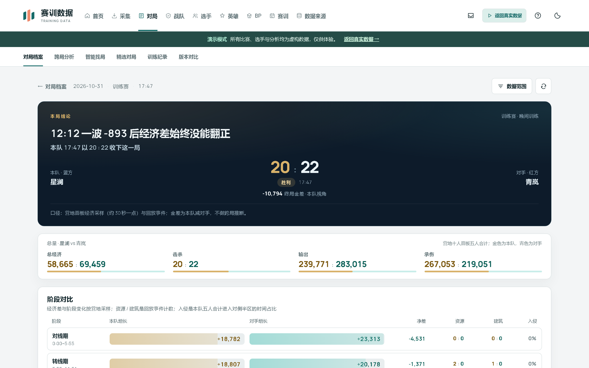
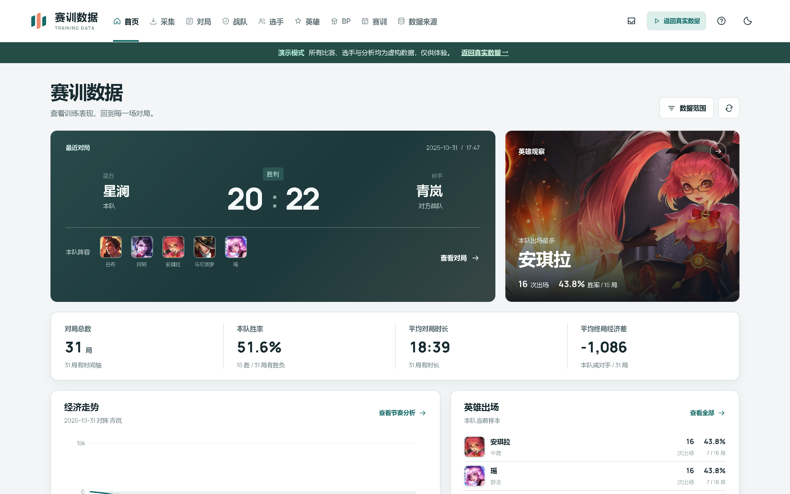
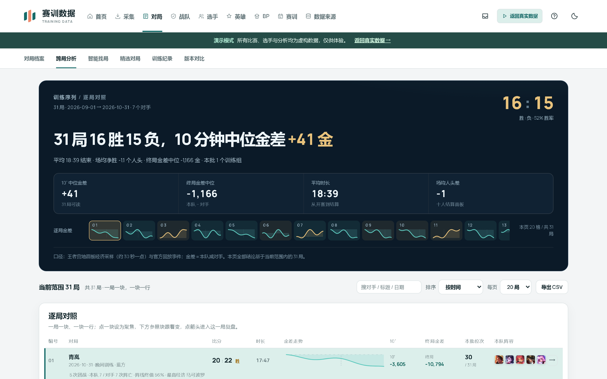
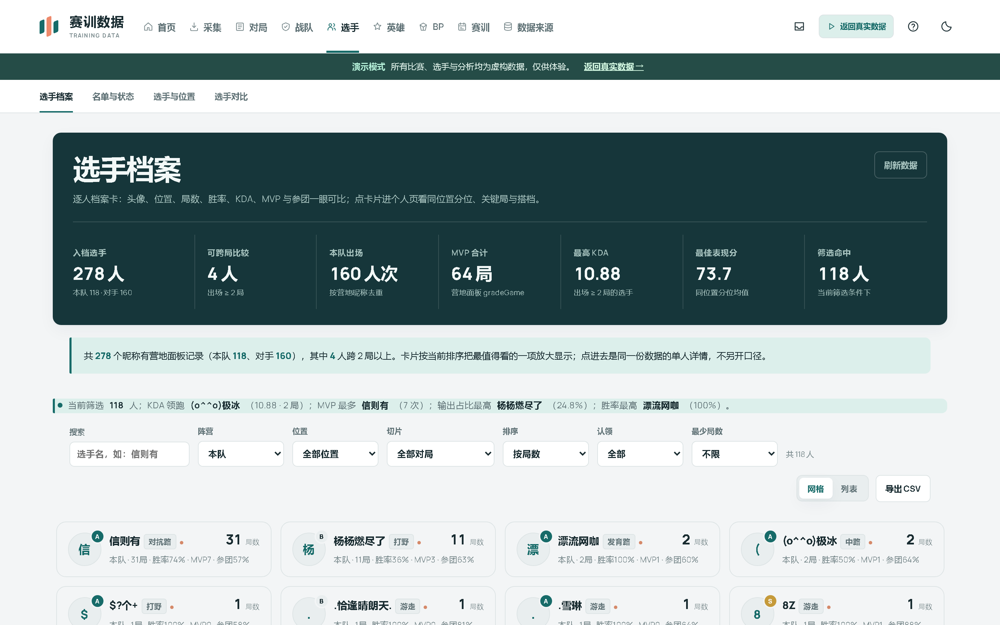
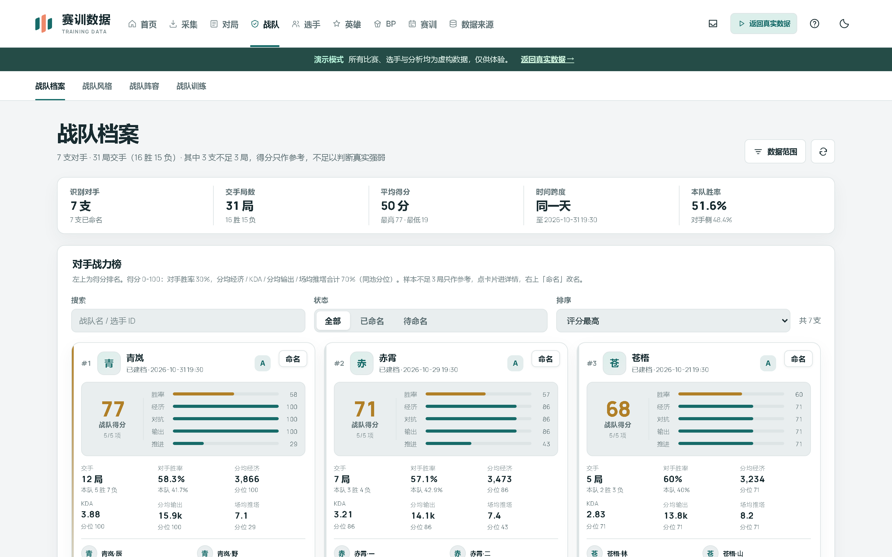

本局结论，一页看完
比赛时间线、经济曲线、掉点定位与阵容对照集中在一个视图里，复盘会上直接投屏；结论可导出 PDF 进训练小结。

截图、录屏、表格、营地链接，统一进一条本地链路：识别、核对、入库、分析。 数据留在你自己的电脑里，每个数字都标明来源。

训练赛的问题从来不是「没有数据」，而是数据散在截图、录屏、表格和营地链接里。这个平台把这条链路接起来。
比赛时间线、经济曲线、掉点定位与阵容对照集中在一个视图里，复盘会上直接投屏；结论可导出 PDF 进训练小结。

多局数据按同分路、同口径聚合重算，不拿训练量和比赛量混着比；选手状态与英雄池的变化一眼可见。

已入档的营地记录构成选手档案：场均值、趋势与稳健偏差标记异常局；身份绑定独立管理，认错人不会被静默覆盖。

对手战力榜与阵容、BP 手序、版本分布对照，约训练赛和赛前准备共用同一份事实，每个数字都标明来源。

识别、入库、分析全部在这台电脑上完成。没有账号体系，没有云端存储，服务器只知道你在本机开了个网页。
OCR 与数据解析在本机跑，截图和录屏不会离开这台机器。
整个 data 目录拷走就是完整备份；换电脑放进新包即可延续全部数据。
增量更新只替换程序文件，data、授权与配置永远不在更新范围内，失败自动回滚。
把赛后截图或营地链接拖进来，或者直接选一个 xlsx。识别结果全部是可改的候选值。
逐项确认选手身份与数值。身份冲突不会被一次误识别静默覆盖，拿不准的交给你判断。
打开比赛时间线，看经济曲线、掉点与阵容；导出 PDF 直接进训练小结。
不想用安装包？源码是公开的，Python 3.11+ 即可运行；也可以先灌一份合成演示数据看看效果。
克隆仓库、装依赖、启动，浏览器打开 127.0.0.1:8766 即是完整工作台。
git clone https://github.com/hccccc01333/kpl-scrim-lab.git
cd kpl-scrim-lab
pip install -r requirements.txt
python server.py
服务保持运行，另开一个终端灌入 12 场合成演示数据。队名、选手名、比分全部虚构，不含真实对局。
# 另开一个终端，服务保持运行
python scripts/seed_demo_data.py
推荐安装包：按用户安装，不需要管理员权限，桌面和开始菜单都有入口。也可以下免安装包，解压即用。
安装包与免安装包随版本发布在 GitHub Releases；国内网络不稳定时，直接在赛训群文件里获取。 没有代码签名，浏览器下载的 exe 可能提示「未知发布者」：点「更多信息 → 仍要运行」， 或右键安装包 → 属性 → 勾选「解除锁定」。经微信 / U 盘传过去的文件不会触发这个提示。
不会。平台没有云端服务，识别、入库、分析都在本机完成，数据只写在本地 data 目录。唯一的外部请求是你主动发起的营地同步与更新检查。
不需要。安装包和免安装包都内置了 Python 运行时与依赖，解压或安装后直接双击即可。源码运行才需要 Python 3.11+。
目前只提供 Windows 10 / 11 桌面端。界面是自适应的，局域网内可以用平板浏览器访问同一台电脑上的服务（默认关闭，需要显式开启）。
不会。增量更新只替换程序文件，data、.env 与营地授权不在更新范围内；更新失败会自动回滚到上一版本。卸载程序也不会删除 data。
项目没有购买代码签名证书。点「更多信息 → 仍要运行」即可，或右键安装包 → 属性 → 勾选「解除锁定」。经微信、U 盘传过去的文件通常不会触发提示。
个人学习、学术研究与非营利组织可以免费使用。职业俱乐部、训练机构等商业场景需要单独授权，见 LICENSE 或直接联系作者。